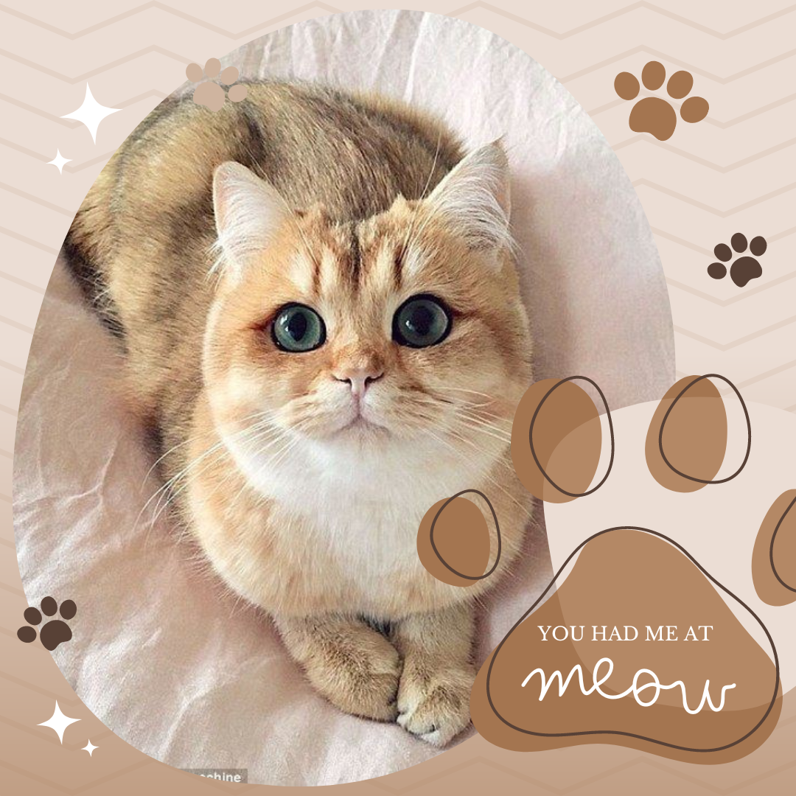
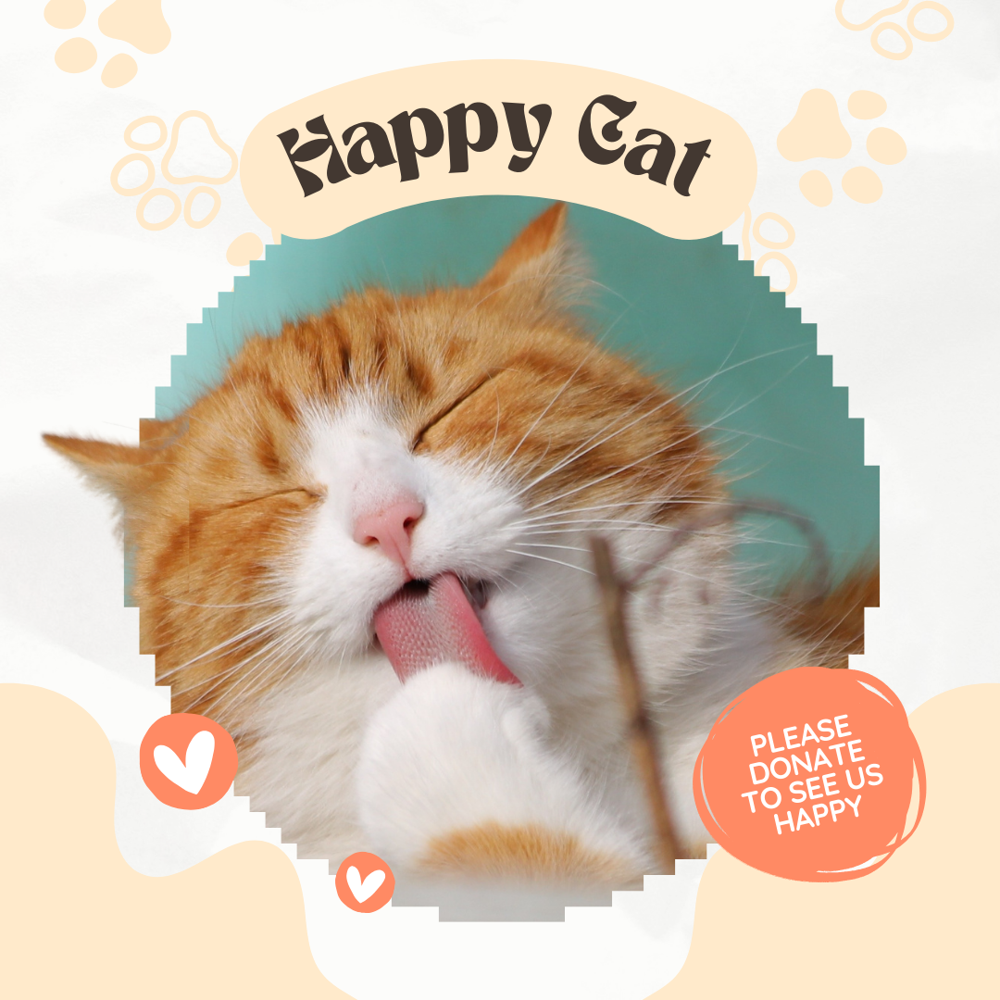

|  |
| The Online Adoption Portal is a digital platform where individuals can browse profiles of animals available for adoption. The portal provides detailed information about each animal, including their age, breed, health status, and personality traits. Prospective adopters can apply online, schedule visits, and even complete the adoption paperwork through the portal, making the adoption process more accessible and convenient. |
| Lost and Found Services are designed to help reunite lost pets with their owners. Pet owners can report lost pets and upload their photos and descriptions to a central database. Conversely, individuals who find stray animals can report them through the same platform. The service often includes tools to match lost and found reports, increasing the chances of reuniting pets with their families. |
|  |
| This service allows individuals to support animal welfare organizations through online donations and sponsorships. Donors can make one-time contributions or set up recurring donations to support the care of animals. Sponsorship options might include sponsoring a specific animal, contributing to medical care, or supporting specific programs within the organization. These contributions are crucial for funding operations, medical treatments, and other essential services for animals in need. |